Procedural Hologram Shader
源地址：https://deepspacebanana.github.io/deepspacebanana.github.io/

This was a quick little effect I came up with, to try and test some ideas I had for some Procedural Vertex Animation and a hacky technique for generating psuedorandom Vectors per face in the Shader. This would probably be infinitely easier to do if Unreal gave us access to Triangle,Vertex and Poly data in the Material Editor. But here’s what I did.
Note: You can open the images in a new tab to view them at a higher resolution
The main goal with this effect was to try and make the shader fully procedural.It would probably be quite easy to recreate using textures.


The Setup
This effect uses a simple sphere mesh with Split Edges as the base object. This is not really a reusable effect, as I was jsut experimenting.
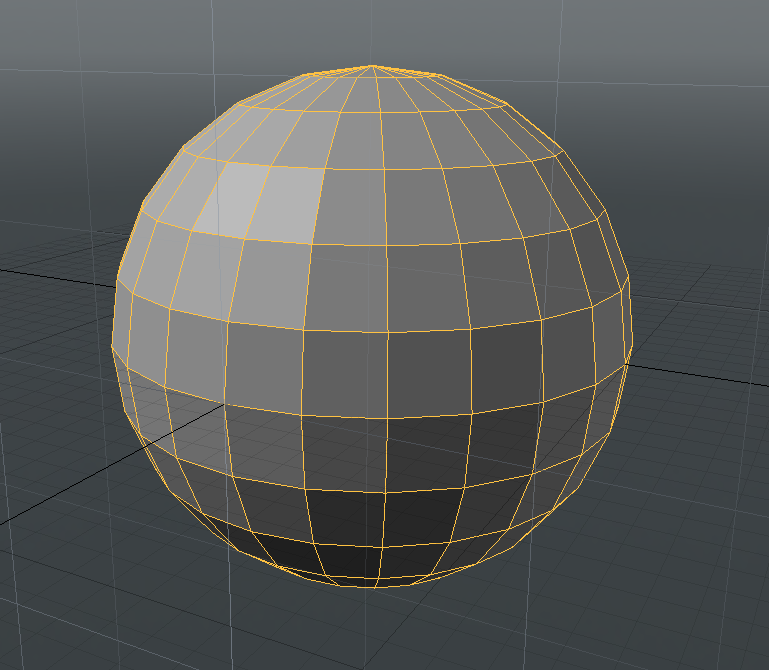

Shader Setup
I n a nutshell, the shader basically displaces each face along it’s normal, and the animation is driven by some math in the Shader. We also procedurally generate some psuedorandom Vec2 values per face of the object, we then use these per face values to have each face have some randommness in how muc hthey displace.
Generating Random Values Per Face
The Network below uses the VertexNormal with the MF_Vec2Noise2D function to generate some psuedorandom vec2 values per face on the model, Time is used in the Seed value so that the vec2 values randomly change over time. This Technique only works on simple concave/convex shapes which is why the shader, is not reusable. Perhaps there is some way to access some kind of PolygonID value using the Custom Node in unreal but I’m not familiar enough with Unreal’s Rendering API to figure out how to do it.
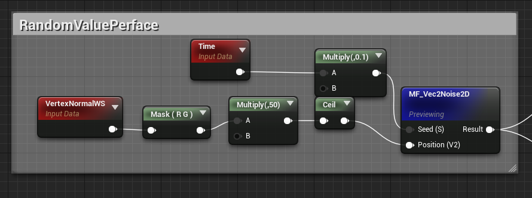
The preview result looks like this
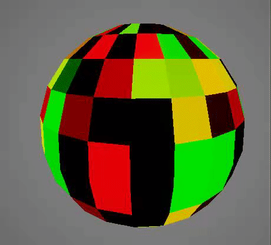
MF_Vec2Noise2D takes in a vec2 input and outputs a psuedorandom vec2 value from it. THe node network for the function can be seen below
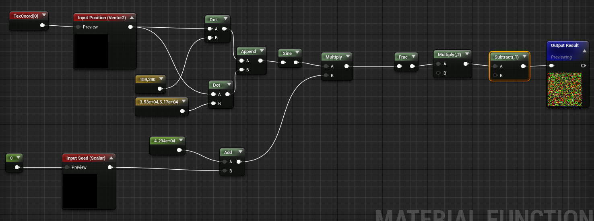
World Position Offset
The network below uses a sphere mask, to drive displacement alongthe Vertex normal, using the Red Channel from the psuedorandom value generated previosuly to create soem variation in the displacement. The SineWave is jsut being used to preview, in the end we can jsut replace it with a scalar Parameter.
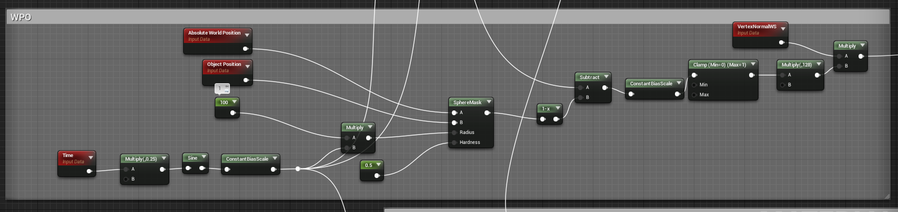
If you wire the result from this into the world position output, you should see this result
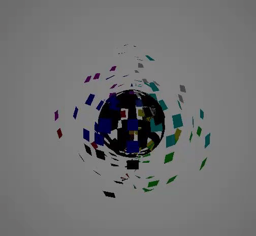
Look development
Generate Procedural Grid using UV Coordinate
The tricky part here was getting the grid lines to line up perfectly with the edges on the mesh so that when each poly was dispalced outward they would have a perfect outline around them
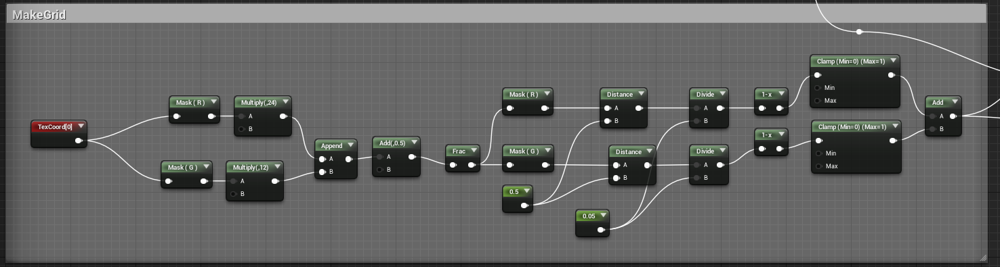
Multiplying the R and G channels of the UV coords iwth the X and Y subdivision of the sphere mesh, makes the grid lines match the number of edges on the mesh.If you preview the result form this network you will see it does.
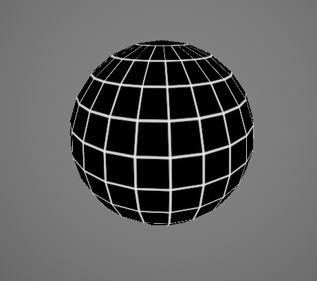
Horizontal Paning Bar
This is done in localized world Space, could have jsut as easily used a Texture or used UV Coords to generate it.
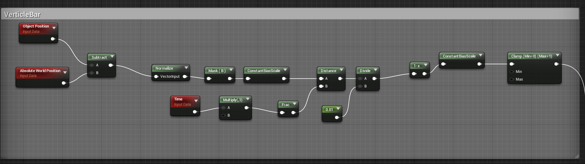
The result from this network
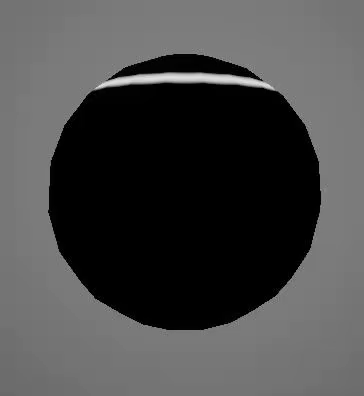
Combining grid and Panning Bar
Next the Panning bar and Grid Results are combine together, by doing the following little bit of math
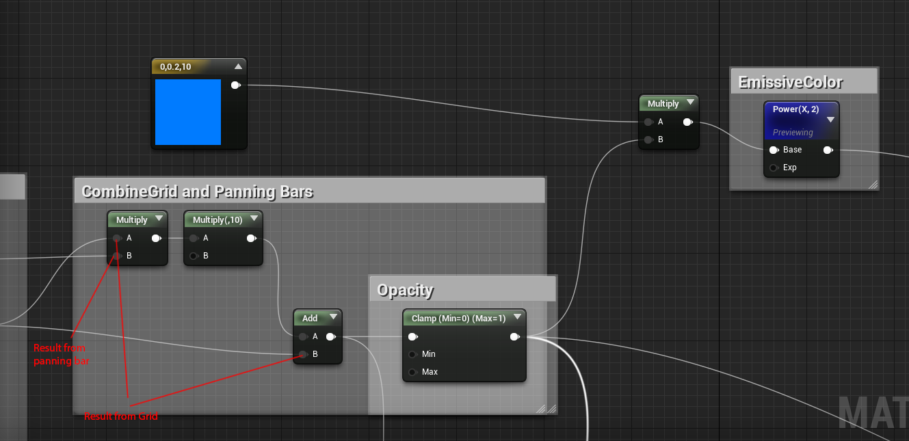
If you preview the result from the power node, you wil lsee this

If you wire in the results from this network into their respective shader inputs, you will get something that looks like this.

Random Opacity Curve
This section of the shader creates the opacity curve so that the ppoly’s appear randomly as the form the sphere
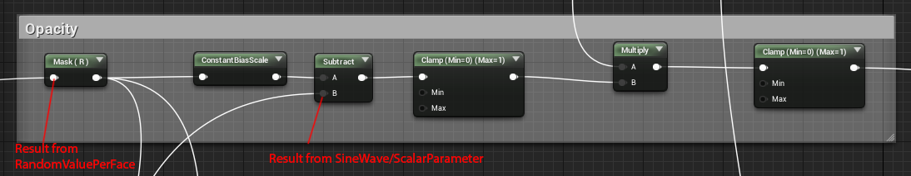
Wire this into the opacity and you’ll get this result

Creating an Opacity Curve for glow
If you look at the effect, you’ll notice that the glow does something interesting, each face glows bright before it becomes fully visible

This is done by tweaking the opacity curve to have a quick bump as it almost reaches full value of 1.
If we think of the opacity curve as a linear gradient over time, it’ll look something like this.
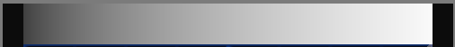
So what I we do is add a small bump around the 0.75 area where the value quickly climbs to 1
Now if we add these two curves together we will get a gradient that has a bump right before it hits a value of one
so here’s how we achieve that
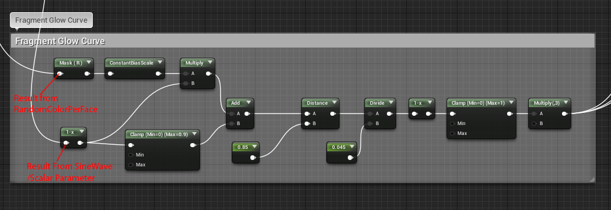
If you preview the result from this network you will see this.
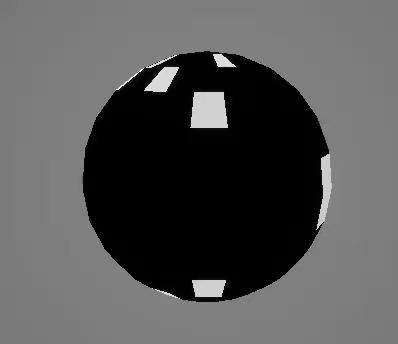
As you can see it uses the result from the sinewave and the RandomFacevalue to isolate gradient curve as it hits a value of 0.85, and adds a quick bump to the curve
The result from this network then gets added to the Opacity and Emissive sections as shown below to get teh final Effect.
Opacity
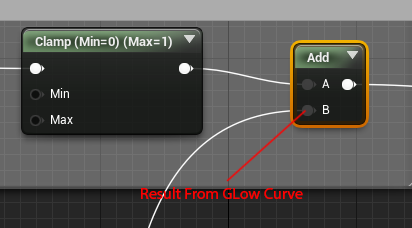
Emissive
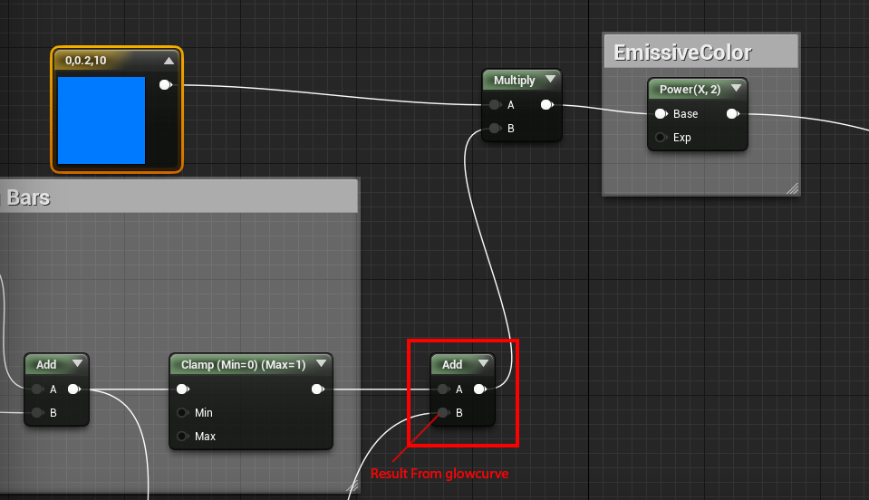
And that gives us the final Effect, we can replace the sinewave with a Scalar Parameter and now we have a single Scalar parameter that controls the entire effect, the glow,opacity etc all work automatically.
To conclude here is a variation of the effect, in this one I force all the Random face values to go from 0-1 so that the sphere is fully formed and isn’t jsut partially formed.
关于本文
本文作者 Master Gong Sheng, 许可由 CC BY-NC 4.0.